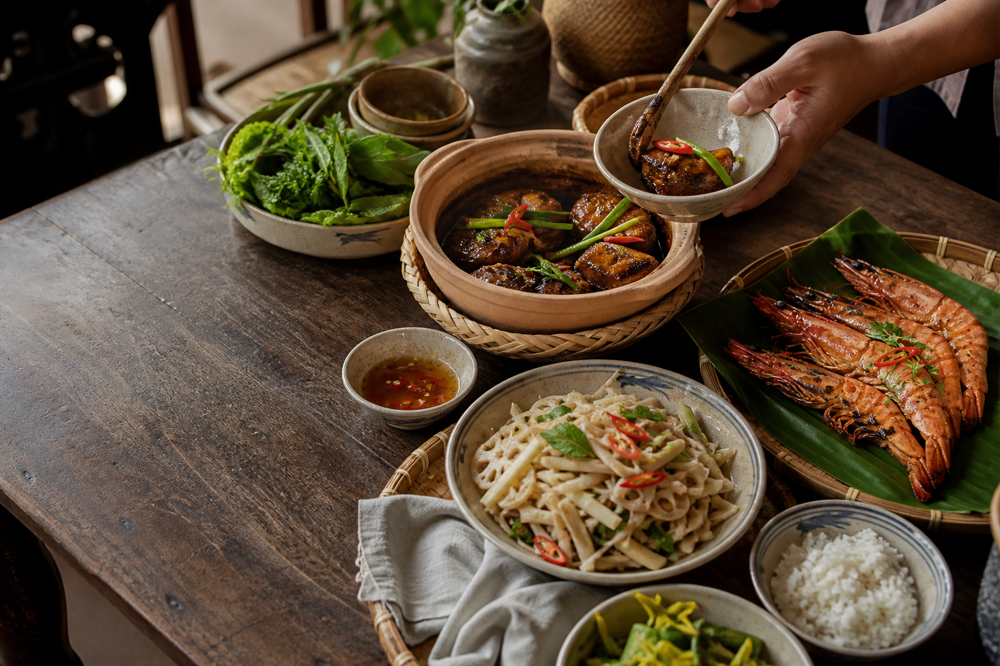
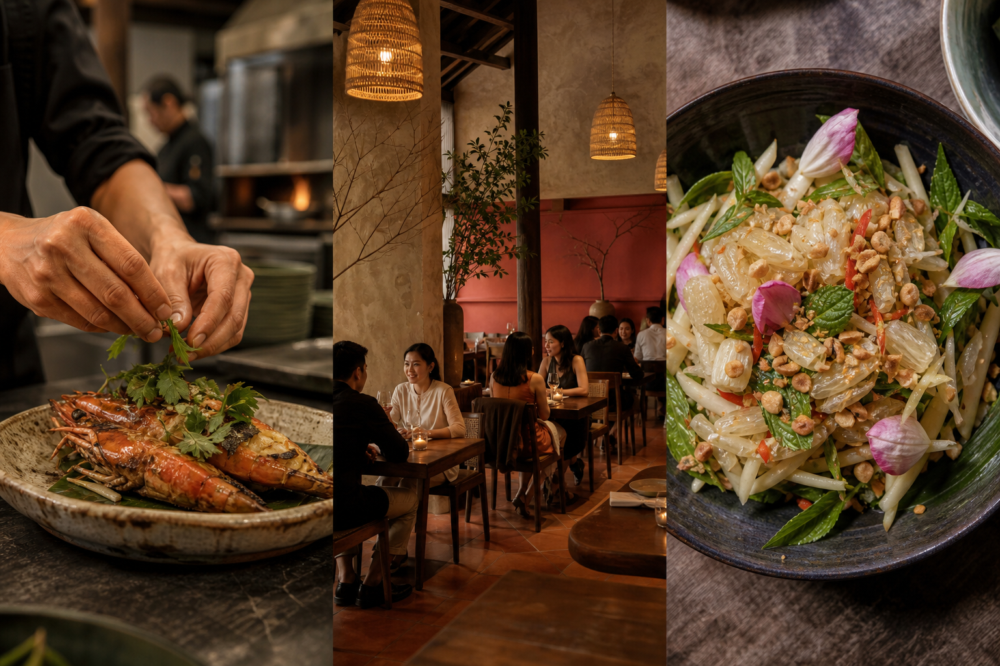

Gỏi bưởi & ngó sen
Tôm sông · rau răm · đậu phộng rang
THỰC ĐƠN MÙA HẠ · 2026
Chúng tôi nấu món Việt bằng nguyên liệu đang ở độ ngon nhất — gần gũi trong ký ức, mới mẻ trên bàn ăn.

02 / CÂU CHUYỆN
TỪ BẾP NHÀBếp Mùa tìm về những vùng nguyên liệu nhỏ, gặp người trồng, người đánh bắt và cùng họ chọn điều ngon nhất của từng tháng.
Chúng tôi giữ lại hương vị quen thuộc của bữa cơm Việt, rồi kể lại bằng cách nấu nhẹ hơn, cân bằng hơn và tôn trọng trọn vẹn tính cách của nguyên liệu.
VÙNG NGUYÊN LIỆU
ĐỒNG HÀNH CÙNG BẾP
04 / TỪ BẾP ĐẾN BÀN

05 / TRẢI NGHIỆM
Thực đơn gọi món nhẹ nhàng cho những cuộc gặp giữa ngày.
11:30 — 14:30Set theo mùa và thực đơn gọi món, trong không gian ấm hơn.
17:30 — 22:30Phòng riêng 8–14 khách cho gia đình và những dịp đặc biệt.
ĐẶT TRƯỚC 24H06 / ĐẶT BÀN
Để Bếp chuẩn bị một chỗ ngồi vừa vặn cho câu chuyện của bạn.